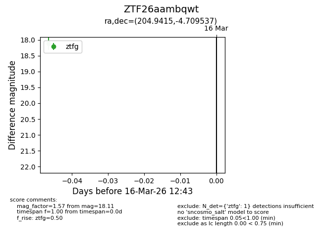
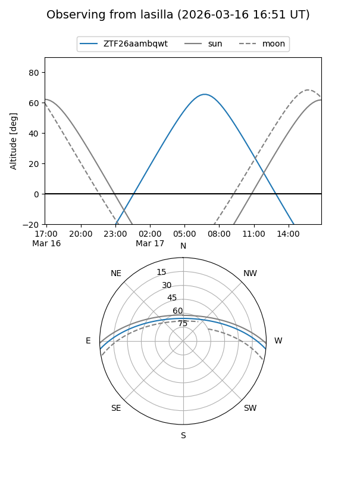
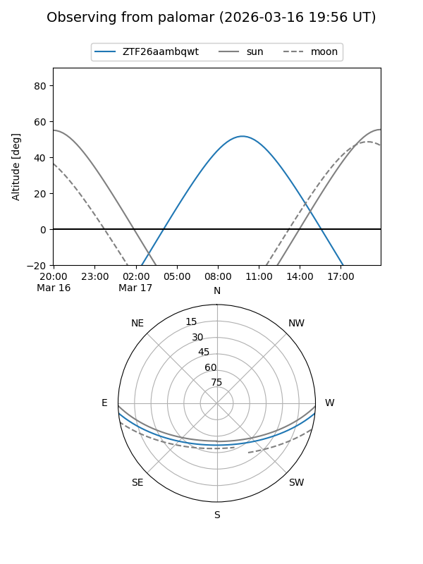

ZTF26aambqwt
Target ZTF26aambqwt at 2026-03-16 12:45
Aliases and brokers:
FINK: link
Lasair: link
ALeRCE: link
alt names
ZTF26aambqwt (ztf,fink_ztf)
Coordinates:
equatorial (ra, dec) = 204.9415,-4.70954
equatorial (HMS+DMS) = 13:39:45.97,-04:42:34.33
galactic (l, b) = (324.8884,+56.08818)
Flags:
Photometry:
last ztfg=18.11
1 ztfg detections
Lightcurve

Visibility


Additional plots